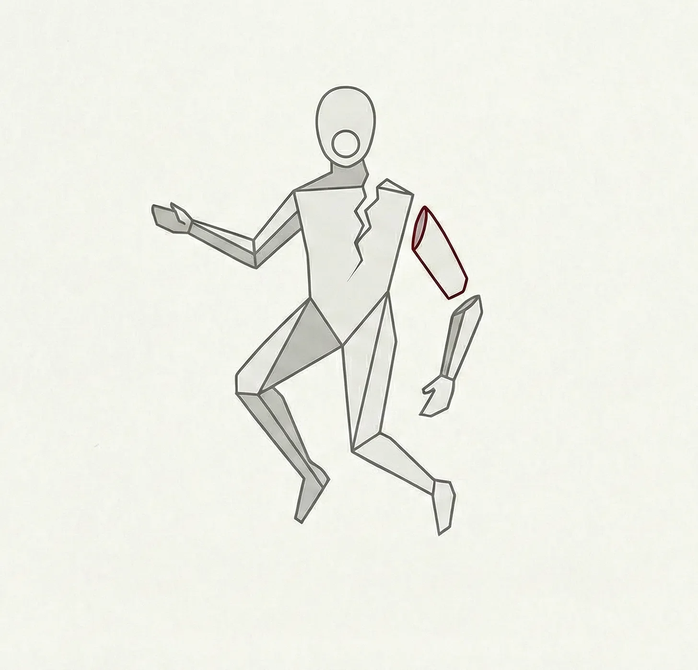

칼날이 양파를 버터처럼 부드럽게 가르고, 이어서 살을, 그리고 뼈를 파고든다. 다리우스는 마치 남의 주방에서 벌어진 참사를 구경하듯, 무심한 호기심 어린 눈으로 자신의 검지가 손에서 떨어져 나가는 모습을 지켜본다. 잘린 손가락 끝은 다진 샬롯 옆에 떨어진다. 재료 손질 과정에 찍힌 창백한 쉼표 하나처럼.
[The blade slides through the onion like butter, then through skin, then bone. Darius watches his index finger separate from his hand with the detached curiosity of a man observing someone else’s kitchen disaster. The fingertip lands beside the diced shallots, a pale comma punctuating his prep work.]
비명도, 충격도 없다. 그저 채소들 틈에 섞인 자신의 손가락이라는 기묘한 광경뿐이다.
[No scream. No shock. Just the peculiar sight of his own digit among the vegetables.]
그는 남은 손가락들을 움직여본다. 상처는 비명을 질러대야 마땅했다. 도마를 시뻘건 피로 칠갑해야 했다. 하지만 대신, 꽉 잠그지 않은 수도꼭지처럼 피가 그저 게으르게 배어 나올 뿐이다. 다리우스는 잘려 나간 손가락 끝을 집어 들어 깔끔한 절단면을 살핀다. 정말이지 전문가다운 솜씨다. 그는 언제나 자신의 칼질 실력에 자부심을 느껴왔으니까.
[He flexes his remaining fingers. The wound should be screaming. Should be painting his cutting board crimson. Instead, it seeps lazily, like a leaky faucet that needs tightening. Darius picks up his severed fingertip, examines the clean cut. Professional work, really. He’s always prided himself on knife skills.]
“허,” 그가 텅 빈 주방에 대고 말한다. “이건 또 새롭네.”
[”Huh,” he says to the empty kitchen. “That’s new.”]
와이어가 총성 같은 소리를 내며 끊어진다. 두 건물 사이, 콘크리트 바닥 위 30피트 높이에 매달려 있던 제이크는 중력이 마치 기다렸다는 듯 열성적인 악의를 품고 자신을 낚아채는 것을 느낀다. 그를 붙잡아 주었어야 할 안전벨트는 저 위 장비에 쓸모없이 매달려 흔들릴 뿐이다.
[The wire snaps with a sound like a gunshot. Thirty feet above the concrete, suspended between two buildings, Jake feels gravity reclaim him with enthusiastic malice. The safety harness—the one that should have caught him—dangles uselessly from the rigging above.]
그는 높은 곳에서 떨어진 고깃덩어리처럼 둔탁하고 젖은 소리를 내며 보도블록에 처박힌다. 왼쪽 다리는 도저히 꺾일 수 없는 방향으로 뒤틀려 있고, 대퇴골은 부러진 우산 살처럼 청바지를 뚫고 튀어나와 있다. 어깨뼈가 아스팔트에 부딪히며 포장용 뽁뽁이를 밟아 터트리는 듯한 소리를 내며 으스러진다.
[He hits the pavement with the wet thud of meat dropped from height. His left leg bends in directions legs weren’t designed for, the femur jutting through his jeans like a broken umbrella spoke. His shoulder blade cracks against the asphalt with the sound of stepping on bubble wrap.]
촬영 팀이 그를 향해 달려온다. 그들의 얼굴은 직업적인 당혹감으로 굳어져 있다. 제이크는 처참하게 망가진 자신의 다리를 응시하며, 눈앞이 하얗게 변할 정도의 고통이 찾아오기를 기다린다. 하지만 대신, 그는... 아무것도 느끼지 못한다. 마치 남의 엑스레이 사진을 보고 있는 것만 같다.
[The film crew rushes toward him, their faces masks of professional panic. Jake stares at his mangled limb, waiting for the agony that should be turning his world white-hot. Instead, he feels... nothing. Like watching someone else’s X-ray.]
“내 뼈가 보이는데,” 몰려든 사람들을 향해 그가 선언하듯 말한다. 그를 유명하게 만든, 그 특유의 연극적인 발성이 실린 목소리다. “저건 분명 저기 있으면 안 되는 거잖아.”
[”I can see my bone,” he announces to the gathering crowd, his voice carrying the theatrical projection that made him famous. “That’s definitely not supposed to be there.”]
유압 프레스는 대상을 가리지 않는다. 안전 잠금장치가 풀리자, 기계는 토미의 오른팔을 압축해야 할 여느 금속 조각처럼 취급해 버린다. 기계는 자신의 작업에 만족한 듯 웅웅거리는 소리를 내며, 토미의 팔꿈치부터 손목까지 이르는 팔뚝을 팬케이크처럼 납작하게 만들어 놓는다.
[The hydraulic press doesn’t discriminate. When the safety lock fails, it treats Tommy’s right arm like any other piece of metal requiring compression. The machinery groans, satisfied with its work, leaving his forearm flat as a pancake from elbow to wrist.]
토미는 한때 자신이 주로 쓰던 손이었던 것을 멍하니 바라본다. 뼈들은 살점이라는 캔버스 위에 둥둥 떠다니는 파편이 되어 추상화처럼 변해버렸다. 용케도 멀쩡한 결혼반지는 더 이상 제대로 된 관절조차 남지 않은 손가락 위에 비스듬히 얹혀 있다.
[Tommy stares at what used to be his dominant hand. The bones have become abstract art, fragments floating in a canvas of flesh. His wedding ring, somehow intact, sits askew on a finger that no longer has proper joints.]
그는 기절했어야 마땅했다. 죽어가고 있어야 했다. 이 자리에 서서 이번 일이 야근 일정에 어떤 영향을 미칠지 차분하게 계산하고 있는 것 말고는, 그 어떤 반응이라도 보였어야 했다.
[He should be unconscious. Should be dying. Should be anything except standing here, methodically calculating how this will affect his overtime schedule.]
“이런, 젠장.” 그가 멀쩡한 손으로 휴대전화를 집어 들며 중얼거린다. “내일은 병가를 내야겠군.”
[”Well, shit,” he mutters, reaching for his phone with his good hand. “Gonna need to call in sick tomorrow.”]
옥상 파티는 마야의 아이디어였다. 도시 위 24층 높이, 샴페인과 웃음소리가 밤공기에 섞여 흩어지던 곳. 음악과 분위기에 취해 춤을 추며 빙글빙글 돌던 그녀의 하이힐 굽이 장식용 난간 모서리에 걸린 것은 한순간이었다.
[The rooftop party had been Maya’s idea. Twenty-four floors above the city, champagne and laughter mixing with the night air. She’d been dancing, spinning, lost in the music and the moment when her heel caught the edge of the decorative stonework.]
추락은 영원처럼 길게 느껴지면서도 동시에 찰나였다. 그녀는 건물의 창문들이 마치 영화 필름처럼 스쳐 지나가는 것을 바라본다. 각 층이 그녀의 추락을 담은 프레임과도 같다. 지면은 중력과 어리석은 결정이 불러온 필연성을 띠고 그녀를 맞이하러 무섭게 솟구쳐 오른다.
[The fall takes forever and no time at all. She watches the building’s windows flash past like a film strip, each floor a frame in her descent. The ground rushes up to meet her with the inevitability of gravity and poor decision-making.]
그녀는 마치 작은 유성이 떨어진 듯한 위력으로 보도에 처박힌다. 척추는 아코디언처럼 찌그러지고, 갈비뼈는 색종이 조각처럼 산산이 부서진다. 타일 바닥에 떨어진 계란이 깨지는 소리를 내며 두개골이 콘크리트 바닥에 부딪혀 금이 간다.
[She hits the sidewalk with the force of a small meteor. Her spine compresses like an accordion. Her ribs shatter into confetti. Her skull cracks against the concrete with the sound of an egg dropped on tile.]
하지만 그녀는 죽지 않는다.
[But she doesn’t die.]
마야는 망가진 꼭두각시 인형처럼 보도 위에 누워, 자신이 떨어져 내린 파티장을 멍하니 올려다본다. 사람들이 난간 너머로 몸을 내밀고 비명을 질러대지만, 그 소리는 마치 멀리서 치는 천둥소리처럼 들릴 뿐이다. 그녀는 죽었어야 했다. 물리학의 모든 법칙이, 모든 의학 서적이, 그리고 모든 이성적인 사고가 그녀가 죽었어야 마땅하다고 외치고 있다.
[Maya lies there, a broken marionette on the pavement, staring up at the party she’d fallen from. People lean over the edge, their screams reaching her like distant thunder. She should be dead. Every law of physics, every medical textbook, every rational thought insists she should be dead.]
하지만 대신, 그녀는 눈을 깜빡인다. 숨을 쉰다. 생각을 한다.
[Instead, she blinks. Breathes. Thinks.]
“이건 말도 안 돼.” 그녀가 밤하늘을 향해 속삭인다.
[”This is impossible,” she whispers to the night sky.]
“또 멍청한 소원 때문이군.”
[”Again some idiot wish.”]
3시간 전
[Three Hours Earlier]
공사장의 비계에서 떨어진 램프가 마치 황동으로 된 유성처럼, 중력의 열정과 최악의 타이밍이 합쳐진 기세로 데릭의 머리통을 강타한다. 눈앞에서 별이 번쩍하고 터지며 그는 비틀거리고, 낡은 황동 램프는 보도를 가로질러 굴러간다.
[The lamp falls from the construction scaffolding like a brass meteor, striking Derek’s skull with the enthusiasm of gravity and poor timing. Stars explode behind his eyes as he staggers, the antique brass thing rolling away across the sidewalk.]
“아, 맙소사!” 그가 머리를 문지르며 거친 숨을 내뱉는다. “도대체 뭐야—”
[”Jesus Christ!” he gasps, rubbing his head. “What the hell—”]
램프가 깨진 달걀처럼 쩍 갈라지더니, 기이한 색깔의 연기가 뿜어져 나온다. 베가스 마술 쇼에서나 볼 법한 연극적인 허세를 부리며 지니가 형체를 드러낸다. 펄럭이는 로브를 두른, 우주적인 오만함으로 똘똘 뭉친 모습이다.
[The lamp splits open like a cracked egg, and smoke pours out in impossible colors. The genie materializes with the theatrical flair of a Vegas magic show, all flowing robes and cosmic arrogance.]
“나를 영원한 감옥에서 해방시켜 주었구나,” 지니가 수세기의 무게가 실린 목소리로 엄숙하게 말한다. “필멸자여, 고대의 법도에 따라 네게 세 가지 소원을 들어주마.”
[”You have freed me from my eternal prison,” the genie intones, his voice carrying the weight of centuries. “I shall grant you three wishes, mortal, as is the ancient law.”]
데릭의 머리가 지끈거린다. 시야가 어지럽게 일렁거린다. 램프는 콘크리트도 깨뜨릴 만큼 세게 그를 강타했고, 그의 생각은 마치 놀란 새 떼처럼 흩어져 버린다.
[Derek’s head throbs. His vision swims. The lamp had hit him hard enough to crack concrete, and his thoughts scatter like startled birds.]
“나—뭐라고요? 소원이라니? 이건 말도 안 돼. 나 뇌진탕인가 봐.”
[”I—what? Wishes? This is insane. I think I have a concussion.”]
“신중하게 선택하라,” 지니는 데릭의 혼란 따위는 아랑곳하지 않고 말을 잇는다. “한번 입 밖으로 낸 소원은 되돌릴 수 없느니라.”
[”Choose wisely,” the genie continues, apparently immune to Derek’s confusion. “For wishes, once spoken, cannot be undone.”]
데릭의 정신이 몽롱하게 돈다. 병원에서 서서히 죽어가는 여동생. 어머니의 관절염. 30년 막노동으로 망가진 아버지의 허리 통증. 그가 목격했던 모든 고통, 그가 막을 힘이 없어 지켜만 봐야 했던 그 모든 괴로움들.
[Derek’s mind reels. His sister, dying slowly in the hospital. His mother’s arthritis. His father’s back pain from thirty years of construction work. All the suffering he’s witnessed, all the agony he’s been powerless to stop.]
“내 소원은—” 그가 입을 뗐다가 멈춘다. 지니는 무한한 인내심으로 기다린다. 데릭의 머리가 쿵쿵 울리고, 생각들이 산산이 조각난다. “이 세상에 더 이상 고통 따위는 없었으면 좋겠어!”
[”I wish—” he starts, then stops. The genie waits with infinite patience. Derek’s head pounds, his thoughts fragmenting. “I wish there was no more pain in the world!”]
지니가 유리라도 베어버릴 듯 날카로운 미소를 짓는다. “네 소원대로 하마.”
[The genie’s smile could cut glass. “As you wish.”]
세상이 뒤틀리고, 현실은 달궈진 금속처럼 휘어진다. 지니는 다시 연기 속으로 흩어지고, 램프는 관 뚜껑이 닫히는 듯한 소리를 내며 스스로 봉인된다.
[The world shifts, reality bending like heated metal. The genie dissolves back into smoke, the lamp sealing itself with a sound like a coffin closing.]
데릭은 보도 위에 홀로 서 있다. 도시 저편에서 한 요리사가 잘린 손가락이 더 이상 아프지 않다는 사실을 막 깨달았다는 것도 모른 채. 곧 한 배우가 뼈가 부러져도 아무런 느낌이 없다는 걸 알게 되리라는 것도, 정비공의 으스러진 팔이 그저 성가신 일거리가 되어버리고, 한 여자가 24층 높이에서 떨어지고도 살아남아 몸이 부서진 채 바닥에서 숨을 쉬고 있을 것이라는 사실조차 모른 채.
[Derek stands alone on the sidewalk, unaware that across the city, a chef has just discovered that severed fingers don’t hurt anymore. That an actor will soon learn broken bones feel like nothing at all. That a mechanic’s crushed arm will become merely an inconvenience. That a woman will survive a twenty-four-story fall and lie broken but breathing on the pavement below.]
그는 자신이 방금 세상의 가장 근본적인 경고 시스템을 고장 냈다는 사실을 전혀 알지 못한 채, 지끈거리는 머리를 문지르며 발걸음을 옮긴다.
[He rubs his aching head and walks away, never knowing he’s just broken the world’s most fundamental warning system.]
결국, 고통이 존재하는 데는 다 이유가 있는 법이다.
[Pain, after all, exists for a reason.]